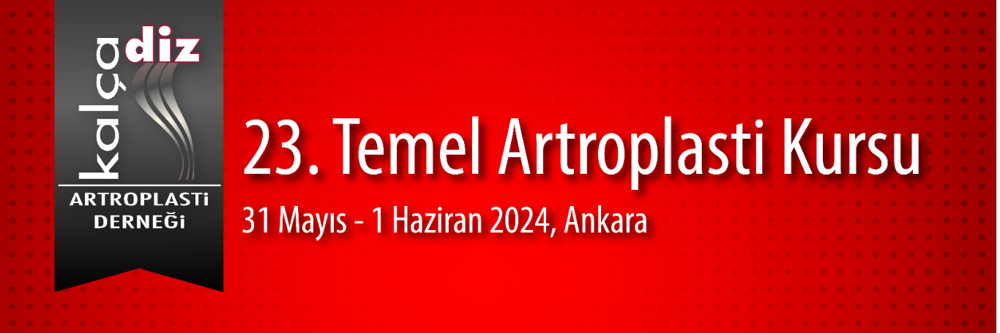

Değerli Meslektaşlarımız,
Kalça Diz Artroplasti Derneği olarak 31 Mayıs 1 Haziran 2024 tarihinde CP Ankara Otel'de 23. Temel Artroplasti Kursunu gerçekleştireceğiz. Kalça ve diz artroplastisi konusunda kendisini geliştirmek isteyen genç meslektaşlarımıza yönelik temel kursta teorik eğitimlerin yanında maketler üzerinde pratik uygulamalar ve yuvarlak masalarda vaka tartışmaları ile bilgi ve becerilerin güncellenmesi amaçlanmaktadır. Artroplasti alanında deneyimli eğiticiler ile pratik ve teorik tartışma olanağı sağlanılmış olacaktır.
İki gün sürecek olan kursumuzda; güncellenmiş, interaktif bir program planlanmıştır. Sizlerle deneyimlerimizi karşılıklı paylasmaktan mutlu olacağız
23. Temel Artroplasti Kursunda buluşmak üzere saygı sevgilerimizle.
Kalça Diz Artroplasti Derneği Başkanı: Prof. Dr. Emre Toğrul
Kurs Başkanı: Prof. Dr. Bülent Özkurt
